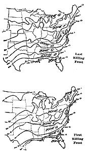
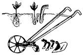
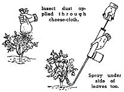
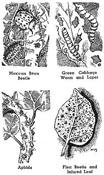
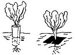
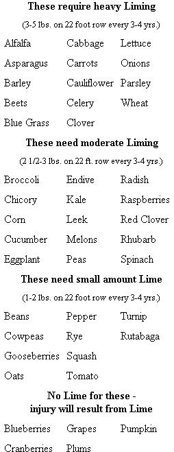
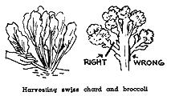

EVEN before the victory garden boom there were so many books, articles, pamphlets on gardening that garden writers seemed to be having quite a time of it trying to be original. For example, I have in front of me a cute article in one of the "garden and home" magazines explaining how you can have cucumbers climb a fence, use carrots for borders, and make a tepee for the children by planting pole beans.
Well, maybe garden articles like that appeal to some folks, but what we wanted at our place was somebody to tell us how to raise a lot of vegetables with as little work as possible.
We weren't interested in gardening as a hobby. We wanted to make it pay and believed we could. We knew that out of every dollar's worth of vegetables my wife bought at the store 60 cents went for marketing and handling.
Our first garden was small - about 30 by 40 feet. We simply dug up the ground, mixed in a little all-purpose commercial fertilizer, bought some seeds at "the corner drug store" - and, needless to say, our garden was pretty much of a flop. Some vegetables grew fairly well, but most didn't. And the insects got more out of it than we did.
We were discouraged. Like many city people we thought a garden was "duck soup". But we've found out that our garden is our most exacting and complex project. Producing eggs, or chickens, or milk, or honey, or pork requires less knowledge than having a good garden. The one especially attractive point about a garden is that even though it is complicated and considerable work, it does not have to be tended every day or twice a day as do livestock. At any rate I wanted to say, don't let your gardening difficulties discourage you from considering livestock projects - it's easier to produce a dozen eggs than a bunch of carrots.
Before we planted our second garden we made up our minds to find out how to do it. I guess maybe we studied a hundred books and pamphlets. Or rather, after reading the first dozen, we skimmed through the rest. We found ourselves reading and rereading the same basic facts.
After our reading, we went ahead with a much larger garden. We planted according to plan and beginning in May had all the fresh vegetables we could eat. In addition, we canned and froze about 275 quarts for winter use. According to Carolyn's figures, our garden saved about $200 - that's $200 over the $22.50 we spent for plowing, seeds, fertilizer, and spray.
Looking back over our experience, we have singled out certain fundamentals and ideas we would like to pass along because we believe they will be helpful to anyone interested in having a good garden with less work.
First, we are living in an exciting, revolutionary era - not the least important is the revolution that is taking place in agriculture - particularly in soil conservation. Louis Bromfield summarizes it thus: "The American farmer has largely worked against Nature. Our new agriculture will be based on the principle of working with Nature".
Probably you've read reviews of Edward Faulkner's startling book Plowman's Folly. If you haven't read it, do by all means. Briefly, from the Homesteader's standpoint, the implications of Faulkner's theory mean that by more natural care of garden soil - the incorporation of humus and manure into the top soil instead of plowing it ten inches underground - phenomenally more productive crops can be grown. Moreover, these healthy crops need less cultivating, watering (and stand up against attack by disease and insects.) In short, better gardens with a lot less work!
Of course, Mr. Faulkner's theories are not entirely proven as yet nor are they entirely new. Many government, state and independent agriculturists have been experimenting along the same lines for a long time. However, his ideas are stimulating and we think you'll profit by reading about them.
Then, too, the new plant hormones and insecticides are evidently going to make gardening more scientific.
1. Get Your Soil in Shape
Almost any soil can be made to produce lavishly. But poor soil takes money and time - perhaps hundreds of dollars and years - to put in first-rate shape. For this reason before you buy a place it's a good plan to have soil analyzed; check for hardpan, excessive sand or clay condition.
Even if your soil looks good - have it analyzed. You may buy a soil test kit - they sell for as little as $2.00. Or you can send it to your State Agricultural Experiment Station for a free analysis. For the address, ask your local paper or seed store.
Organic substance is the primary means of building good soil. The best source for this substance is barnyard manure. Goat manure is excellent. So, too, is cow manure. Poultry manure is extremely rich in nitrogen. Barnyard manure is usually difficult to obtain - but you will have plenty if you carry out the well-rounded livestock operation suggested in this Plan.
Barnyard manure increases the ability of the soil to hold moisture, keeps the soil loose and promotes root development. The best way to handle manure so it won't lose its value is to compost it as shown in the accompanying diagram. Ideally each year a plot 30 x 60 feet should receive a ton of stable manure.
In the summer when the garden is planted, manure can be used mixed with straw or bedding, etc., as a mulch. But take care not to let it come in direct contact with plants. Leaves, straw, hay, garbage - anything that will decompose should be dumped onto the compost heap and after ripening worked into the top soil. Don't bury this humus material by too deep plowing. If you are making a garden in sod land and must plow deep - then plow twice - once in the fall, then in the spring plow again and bring your valuable top soil back to the surface.
Your soil test will undoubtedly show a deficiency in one of the three basic fertilizers - nitrogen, phosphoric acid, potash. The relationship of these has been worked out for the requirements of various types of vegetables. You can buy various combinations of these three elements - called commercial fertilizers - and work into your ground as you plant. A small application of commercial fertilizer usually brings a greater percentage gain in your harvests than a large application. Remember, commercial fertilizer is only a supplement to barnyard manure. Your soil test will supply you with directions as to the amount of commercial fertilizer you should use. Oftentimes, only super-phosphate is needed when you use barnyard manure. Incidentally, hardwood ashes contain potash; up to 50 pounds per 30 x 60 plot should be mixed into soil annually.
On richly fertilized land plants grow faster and are superior; incredible as it sounds, production of a given amount of vegetables may then take 1/5 as much land - likewise the time required may be cut to 1/5. Insects, too, find it more difficult to ruin healthy plants grown in rich soil.
This needs no further explanation. Get seed catalogues in the winter - plan exactly what you want. (See chart on page 24) . You can start some seeds, requiring an early start, growing in February or March, either indoors, or in a hot frame. Originally, we found spring so busy with our baby chickens, kids, geese, and young pigs arriving, that we bought tomato, cabbage, peppers, etc., from our local nurseryman as plants. Plants, of course, cost more than seeds. Now we are growing our own plants in our "Harvest Kitchen" greenhouse window.
Most vegetables require warm weather to grow. Don't be in too much of a hurry to plant early; once a seedling is stunted it will never attain normal growth.
Mark rows with a string to get them straight. Make a shallow trench - depth according to seeds - with a hoe. Scatter seeds evenly, cover with fine soil, pat down firmly with back of hoe.
When plants are up to a height of 2 or 3 inches, thin according to seed man's directions. Even if this seems to leave too few in a row - do it, don't crowd plants. Beets, carrots, greens can be grown large enough so plants pulled in thinning can be eaten.
Cultivate between rows with a hoe or wheelhoe often - after every rain - at least once a week during early growing season. Handweed along the row as necessary. Be careful not to cultivate so deep you disturb roots. As soon as plants are large enough we find a mulch of bedding from the barn laid between the rows keeps down weeds and holds moisture. This is a real labor-saver.
Garden insects need not cause undue damage if you are ready for them with an insecticide and your garden sprays. Walk through the garden daily to inspect for insects. Read up on insects before they hit you.
One of the most discouraging things to the novice reading about garden insects is their great variety. But classified according to method of control, the whole question of what to do about garden pests becomes simple.
By far the greatest majority of insects and fungus diseases fall into four classifications according to their method of control:
Type 1. Sucking insects, such as aphids (plant lice), thrip, leaf hopper, and scale. This class of insects feeds by inserting their sharp slender beaks into the leaf stem or blossom, drawing forth the sap which is the vitality of the plant. Contact insecticides applied to this class of insect enter the body by penetrating the skin or pores, causing death by corrosion of the tissues or suffocation. Thorough spraying giving complete coverage on both upper and lower surfaces of the leaves, important.
Type 2. Leaf-eating insects, such as bettles, slugs, worms, caterpillars that eat holes in leaves, are effectively controlled by a stomach poison. Insect eats spray or dust that is on the leaf, the poison becoming effective when mixed with the digestive juices in the stomach.
Type 3. Certain blight and fungus diseases, including leaf-spot, rust, mildew, and anthracnose are satisfactorily controlled by a preventive with copper or sulphur the active ingredient. The tiny disease seeds (spores) ever present in the air are prevented from gaining a foothold on vegetation where a copper or sulphur fungicide has previously been applied. Even after fungus has gained a start, spraying with fungicides will retard and, in some cases, eliminate the disease.
Type 4. Migratory insects (leaf chewers) such as grasshoppers, ants, cutworms, sow bugs, also slugs or snails, don't live on plants but crawl along the ground generally at night, destroying much vegetation. These crawling types of insects can be controlled by the use of poison baits, poison syrups, or under certain conditions, a sticky substance easily applied which wil act like fly paper. (See chart page 24).
5. Irrigation
Probably more harm than good is done by water applied to home gardens. In arid and semi-arid localities watering is, of course, not only necessary, but a whole subject in itself. However, in most sections of the country, except for occasional droughts, a good rain every ten days is all any garden needs. Light sprinkling is bad. If rain does not come, one of the best and easiest ways to water is a rotary sprinkler attached to end of your garden hose and held in one spot for at least an hour. The ground thus soaked needs no more water for ten days to two weeks of dry weather. Cultivate soil after rain but not until surface dries out.
6. Harvest When Tender
Vegetables don't grow evenly from day to day - a warm day following a good rain may push vegetables ahead as much as a number of days not suited to growth. You must inspect the garden every day as vegetables begin to ripen. Pick most on the tender side - they'll taste even better if they're not quite as large as the longer, older, heavy type you are accustomed to buying in the store. Particularly when canning, choose the tender. Never pick ahead of time - wait until just before you're going to use them before bringing fresh vegetables from the garden. Try putting the water on to boil before you pick sweet corn - and cook it only 7-8 minutes for one of nature's most tasty feasts!
7. Keep Your Ground Planted in Green
As soon as your last vegetables are out of the ground in the fall, roughen up the soil and plant rye. This will get a good start before winter and grow again in early spring. When you are ready to plant in spring, incorporate this green manure into the top surface of the soil by disc harrow, or by fork and hoe. This green manure will decay fast when left in top soil and provide natural plant food for your seeds.
Hints for Easier Gardening
New land almost always requires lime to alkalize the acid content resulting from leaf decay, etc. Your soil test will show whether or not your soil is acid or alkaline and tell you specifically how much lime or possibly its opposite, aluminum sulphate it needs.
An easy way to see that plants get proper amounts of lime is to divide the garden into four sections and lime one section heavily for vegetables in the first group, lime second section moderately, etc.
Natural or Artificial Manure? There is, as probably many of you know, practically a pitched battle going on amongst two groups of Agricultural Experts as to whether or not fertility is best kept up by use of artificial (chemical) fertilizers or organic substances. The "organic" group ask, "Are Chemical Fertilizers Ruining our Health?" They believe that only properly composted organic matter and barnyard manure should be used to preserve the soil's fertility. On the other hand, certain advocates of chemical fertilizers advocate "soil-less culture" - or growing vegetables solely in chemical solutions. The extreme in either method is costly. Generally, as far as we can judge, soil-less culture certainly seems a passing fad; and more and more attention seems to be given to methods of keeping the soil fertile by putting back manure and humus.
The poor "backyard gardener" is, however, in a tough spot if he is not willing to keep some animals. Right now, he has a hard enough time to gather leaves, garbage, etc., etc., to make his compost and with the new "electric garbage disposal sinks" which chew up garbage and send it down the drain, he's still harder pressed.
Almost all garden books go into great detail explaining how to build a compost heap - a method of turning waste foods, leaves, inedible garden produce, kitchen parings into humus. Building a compost heap takes a lot of time. First, you choose a shady place for the compost pile. . .build pile in 6 inch layers, keep level, wet it down if necessary every week for 8 to 12 weeks, and then cut through the pile with a sharp spade . . . build it up again, keep watering for 8 to 12 weeks more, then it should be ready to use ...but it's better after two years. Even then, when you're all done, you have an inferior substitute for barnyard manure. At our place, we don't bother much with a compost heap in the sense that we gather leaves, etc., etc. We feed surplus kitchen parings, vegetable husks, lawn clippings, etc., to the goats, chickens and geese, and in about 24 hours we have excellent manure.
However, to keep manure from losing its value as it will do if exposed to sun and rain, we pile alternate layers of manure and bedding, as shown, and cover with dirt. If this is turned once or twice during a good solid rain it will make excellent humus in six months, winter excepted.
Stake Tomatoes? Peas? In the garden books, you'll find all sorts of flossy ways to stake up tomatoes. Commercial growers rarely bother with staking. And at our place we save a lot of effort by cultivating tomatoes only once, then mulching with 3 inches of poultry litter. Tomatoes then grow beautifully, don't require weeding, cultivating or watering. A few will rot on the ground, but simply plant a few extra.
Intercropping? This is the practice of growing 2, 3, even 4 crops on the same area at one time. Quick maturing crops like radishes, lettuce, beans, spinach may be between rows, or in rows of eggplant, tomatoes, melon, okra, or other crops which utilize ground for a complete season. This is all right where your garden is small - but it's lots easier planting, fertilizing, cultivating, spraying, not to do this.
All Purpose Sprays. There are on the market a number of "all purpose" sprays which attack many types of chewing as well as sucking insects. Obviously, these save effort.
Perennials. Asparagus, rhubarb, Jerusalem artichoke and horse-radish may be left in the garden all-year and are practically self-perpetuating.
Leave Ground Rough. Some gardeners are forever worrying their soil: trenching, raking, plowing. Faulkner shows that land apparently produces much better when supplied with plenty of humus which is worked into the top of the soil by disc harrow and left rough.In fact, he points out that the ideal is to make your whole garden a sort of compost heap.
Plant Late. Usually garden writers say take a chance on losing some seed - plant as early as possible. We find it easier to plant a little late. We don't waste effort and seed this way. Anyway, with our well supplied freezer, plus Jerusalem artichoke, parsnip, and asparagus as early vegetables what do we gain by chancing early planting?
Transplanting. Transplant only when you must. Most transplanted plants get a setback from which they take time to recover and resume growth. And, of course, unnecessary transplanting is wasted effort.
Easy to Grow Vegetables. Beans beets, broccoli, cabbage, Chinese cabbage, carrots, celtuce, chard, corn, endive, kale, lettuce, okra, onions, parsley, parsnips, peas, potatoes, radishes, rhubarb, spinach, squash, tomato, turnips, Jerusalem artichokes.
Suggested Reading:
The Wise Garden Encyclopedia, $5.00.
|
 Frost dates for western states vary according to elevation as well as latitude. Accurate dates can be had by writing your State College of Agriculture or Weather Bureau. |
 Plant at upper left improperly set out. Soil should have been pressed tightly about roots. Use dibble as shown. WHEEL. HOE and attach ments make planting and cultivating a lot easier. |
 Cardboard or stiff paper wrapped around plants protects them from cutworms. Slit tar paper (about 4 inches square) protects against maggots |
|
 |
 |
 |
|
 |
|
|